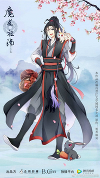
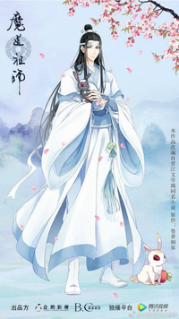
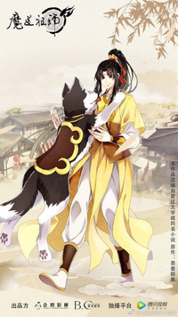

Main Characters

魏婴 Wèi Yīng
The founder of Demonic Cultivation and a former disciple of the Yunmeng Jiang Clan

蓝湛 Lán Zhàn
The second young master of the Gusu Lan Clan. Titled as Hanguang-Jun (含光君, Hánguāng-jūn), Lan Wangji is one of the Twin Jades of Lan.

江澄 Jiāng Chéng
The current leader of the Yunmeng Jiang Clan and Jin Ling's maternal uncle. He is also known by his title, Sandu Shengshou.

金凌 Jīn Líng
The heir to the Lanling Jin Clan. He is the only son of Jiang Yanli and Jin Zixuan and the nephew of both Jin Guangyao and Jiang Cheng.